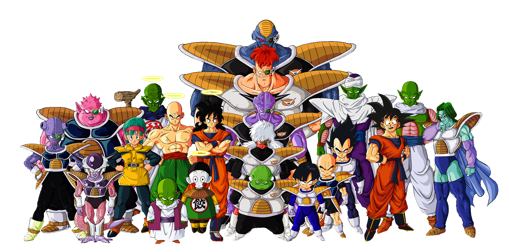

"Dragon Ball" es una popular serie de manga y anime creada por Akira Toriyama. La historia se centra en las aventuras de Son Goku, un guerrero Saiyan con habilidades extraordinarias, mientras viaja a través de mundos y dimensiones para proteger la Tierra de diversas amenazas. La serie combina elementos de acción, aventura, comedia y ciencia ficción, y ha sido apreciada por su animación y luchas épicas. A lo largo de la serie, los personajes enfrentan desafíos cada vez más poderosos, lo que da lugar a la evolución de sus habilidades y relaciones. "Dragon Ball" ha tenido un impacto significativo en la cultura popular y ha generado numerosas secuelas, películas, videojuegos y productos relacionados.
Dragon Ball trata básicamente sobre la lucha entre el bien y el mal. Al principio, algunos de los personajes quieren reunir las siete Dragon Balls para pedir algún deseo personal, pero se enteran de que dichos objetos también son buscados por otros con fines malignos, lo cual les lleva a enfrentarse a ellos en más de una ocasión. Posteriormente aparecen adversarios más poderosos que los anteriores, con objetivos como conquistar la Tierra o exterminar a la humanidad; de tal forma que en la trama abundan varios elementos característicos de la ciencia ficción. Gokū y sus amigos representan el bien e intentan erradicar el mal con ayuda de las Dragon Balls y otros objetos mágicos, sin que la muerte represente un obstáculo definitivo para ellos, ya que pueden revivir con ayuda de dichos objetos.
Las Esferas del Dragón, conocidas en japonés como "Dragon Balls" (ドラゴンボール, Doragon Bōru), son un elemento clave en el mundo de "Dragon Ball", una popular serie de manga y anime creada por Akira Toriyama. Estas esferas son objetos mágicos que tienen un papel importante en la trama de la serie. Cuando las siete Esferas del Dragón son reunidas y colocadas en un orden específico, se convocará al Dragón Shenron (también conocido como Polunga en Namekusei), que es un dragón mágico con el poder de conceder un deseo a la persona que lo invoque. Los deseos pueden ser prácticamente cualquier cosa, desde resucitar a los muertos hasta obtener riqueza o conocimiento.
"Dragon Ball Super" (2015-2018) es una serie de anime que continúa la historia de "Dragon Ball Z" y se sitúa cronológicamente después de los eventos de la Saga de Majin Buu. A lo largo de "Dragon Ball Super", los personajes principales, como Goku y sus amigos, se embarcan en nuevas aventuras y enfrentan desafíos aún más formidables. En esta saga, se presenta a Beerus, el Dios de la Destrucción, y su asistente Whis. Goku se enfrenta a Beerus en una feroz batalla después de que Beerus despierta de un largo sueño y busca luchar contra el Saiyajin legendario. Esta saga introduce el concepto de los dioses y las transformaciones como el "Super Saiyajin Dios."
El universo de "Dragon Ball" es vasto y está compuesto por múltiples dimensiones y universos paralelos, lo que lo hace extremadamente grande en términos de escala. Aquí hay una descripción general de las dimensiones y universos que componen el multiverso de "Dragon Ball":
La mayor parte de la historia de "Dragon Ball" tiene lugar en el Universo 7, que es el hogar de Goku y la Tierra. Este universo consta de varias galaxias y mundos habitados. Incluye numerosos planetas, seres vivos y civilizaciones, además de ser el escenario de los Torneos de las Artes Marciales y eventos importantes de la serie. Además del Universo 7, existen otros 11 universos en el multiverso de "Dragon Ball", numerados del 1 al 12. Cada uno de estos universos es único y tiene sus propias características, seres vivos y deidades. Algunos de estos universos se exploran en "Dragon Ball Super" durante el Torneo de Poder.
Mundo de los Dioses (Reino Celestial): El Mundo de los Dioses es el hogar de los Kaio, seres divinos que supervisan la creación y el equilibrio del universo. Incluye el Reino de los Kaio, el Planeta Sagrado y otros reinos divinos. El "Mundo de los Dioses" o "Reino Celestial" (también conocido como el "Kaioshin Realm" en inglés) es una dimensión divina que desempeña un papel importante en el universo de "Dragon Ball". Este reino es el hogar de los Kaio-shin, seres divinos que supervisan y mantienen el equilibrio en el universo, y también es el lugar donde residen otros seres divinos, como el Gran Kaio-shin.
En el universo de "Dragon Ball" es una dimensión que sirve como el reino de la muerte, donde las almas de los seres fallecidos van después de la muerte. Aunque no se explora en profundidad en la serie, se menciona y representa en varias ocasiones. El Inframundo se compone de dos partes principales: el Cielo y el Infierno. Las almas de las personas que llevaron una vida virtuosa y se consideran merecedoras de recompensa van al Cielo, donde disfrutan de la paz y la felicidad. Por otro lado, las almas de los malhechores y personas malvadas son enviadas al Infierno, donde enfrentan castigos y tormentos adecuados a sus pecados.
Dragon Ball Z fan blog busca proporcionar información acerca del universo de Dragon Ball. Aquí encontrarás todo tipo de material relacionado con los héroes, villanos, música y arte de Dragon Ball. Internet es un lugar muy grande, por eso concentrar la información en un lugar es de vital importancia. El lore de Dragon Ball es muy amplio, por eso hemos decidido resumir la información con el fin de facilitar la lectura sin obviar detalles importantes. Espero que te guste el sitio y muchas gracias por tu visita.
